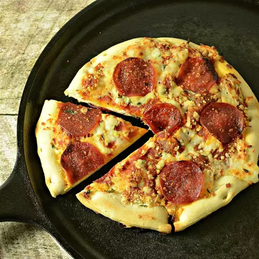

pepperoni pizza
This is easy as pie... no pun intended. The smokey flavor from the wood fire puts a great twist on an old favorite and with the help of a pizza stone, doing this over an open fire is easier than you may think.
You can make a calzone just as easy. Roll out your dough. Spread pizza sauce over dough, then add cheese and fillings. Fold the pizza in half, forming a "half moon".
Ingredients
- 1 pound refrigerated pizza dough
- ¼ cup pizza sauce
- ½ cup shredded mozzarella cheese
- ½ cup sliced pepperoni
Steps
- Place pizza stone on grill directly over wood fire. You may need to begin by spreading out the wood if the flames are too tall. Roll out the pizza dough to desired thickness. Place it on the pizza stone and cook 10 minutes on one side until golden.
- Remove from the fire and on the cooked side, spread the pizza sauce in an even layer over dough leaving about a half inch around the rim of the pizza dough bare. Sprinkle mozzarella cheese evenly on top of the sauce, followed by the pepperoni slices.
- Place uncooked side down, back on the pizza stone. Cover with a foil tent and cook until cheese has melted, about 10 minutes more. Transfer pizza to a cutting board and let cool slightly before cutting and serving.